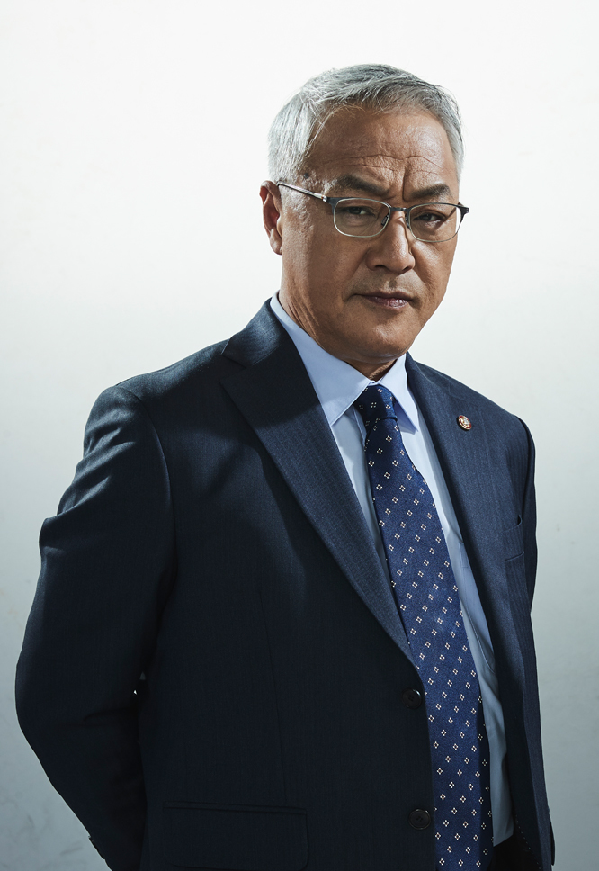
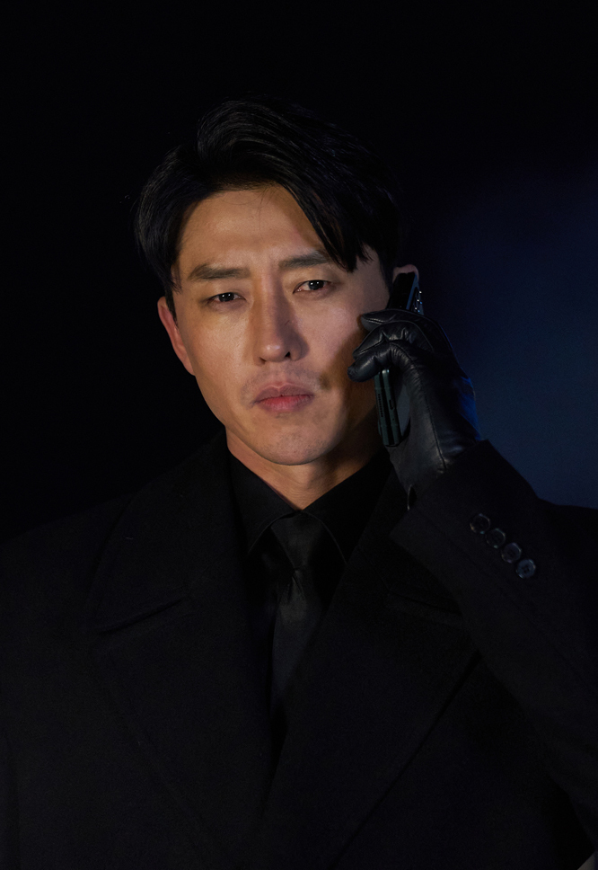
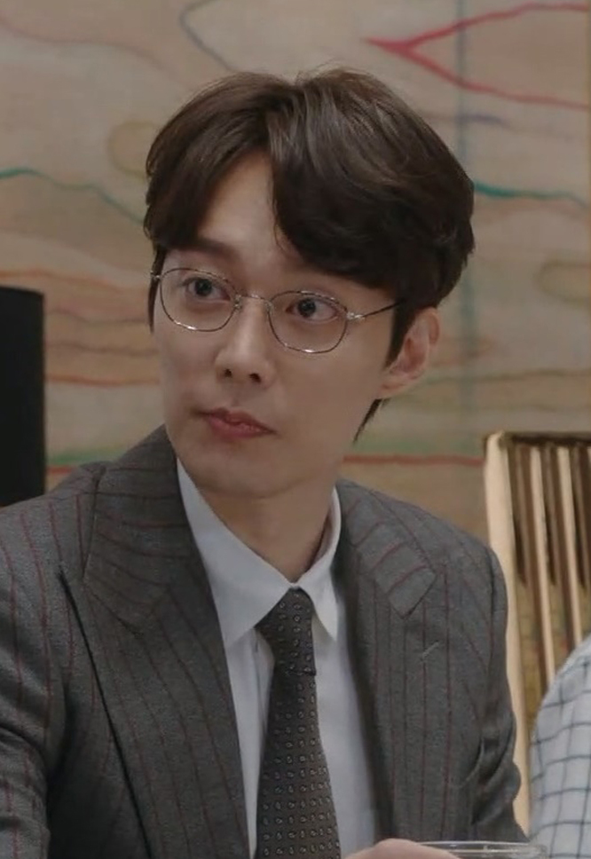
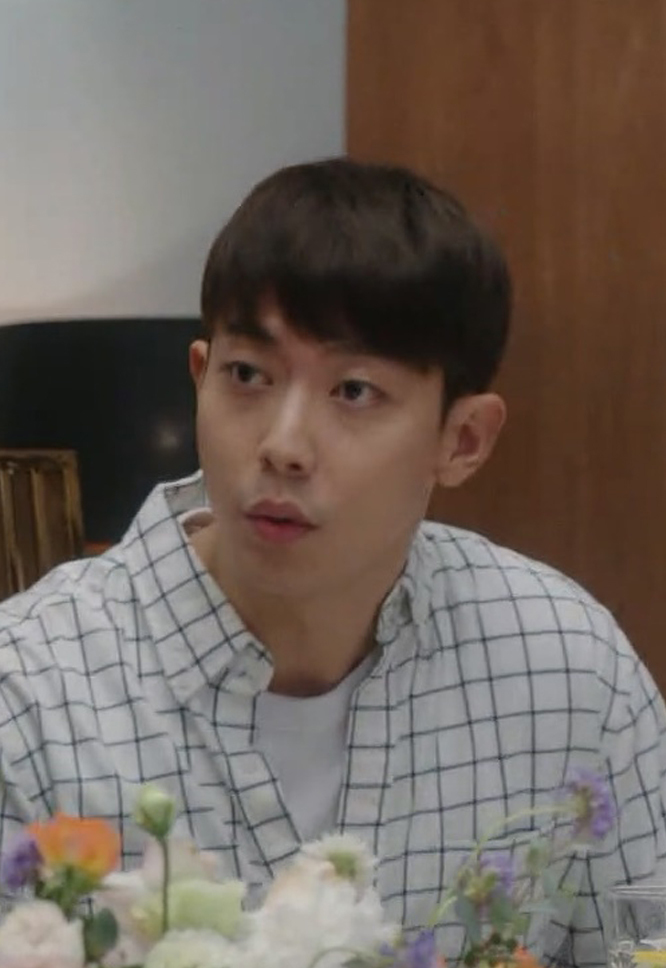

지킬 것, 잃을 것이 없는...
법과 정의 앞에 타협 없는 검사로 불린다.
그렇기에 법 위에 군림는 누군가에겐 껄끄러운 존재다.
그래서 죽었다.
‘악의 원흉 조태섭에게 죄값을 물을 것!’
이것이 그가 두 번째 삶을 살 수 있는 조건이었다.
희우 역시 바라던 바였다.
‘단 한 번의 기회! 반드시 내 손으로 너의 지옥문을 열어주마.’
김석훈
조태섭 못지않은 야망이 있지만
쉽사리 감정을 드러내지 않는 인내심도 갖고 있다.
호탕하고 경우 바른 그의 이면엔
똬리를 튼 독사 한 마리가 숨어있다.
검찰 내 정치에는 탁월하지만
검사로서 그는 유능한 편이 아니다.
능력에 비해 줄을 잘 선 케이스.
김규리
희우의 고교동창이자 한국대 법학과 동기.
희우보다 앞서 사법고시를 패스해 선배검사로 재직한다.
학창시절 희우에게 여러 도움을 받아
희우의 일이라면 앞장서서 도와주는 편이다.
과거 희우에게 마음이 있었던 것으로 보이나
검사가 된 후 편한 친구로 지내고 있다.
장일현
한국대를 거쳐 사법연수원을 수석으로 졸업한
엘리트 검사이자 김석훈의 오른팔.
조태섭의 사람들로 조직된
대한민국 엘리트 집단 비밀 클럽의 멤버로
희우를 비밀 클럽에 소개시킨 장본인이다.
오민국
김산 지청 수사관.
매너리즘에 빠진 김산 지청에 희우가 나타나자
처음엔 경계를 한다.
아니나 다를까 안 그래도 맘에 안 드는 초임검사 희우가
일을 산더미처럼 준다.
투덜대면서도 할 거 다했는데 하고 보니 그렇게 뿌듯하다.
역시 수사관은 열심히 일을 해야 즐겁다는 것을 느낀다.
전석규
경찰서에 미친개가 있다면
검찰청엔 독기 어린 호랑이가 있다.
한번 물고 늘어지면 상대의 혼을 쏙 빼놓는다는
호랑이 검사 전석규.
불의 앞에 물러섬 없는 검사 생활을 하던 중
윗선의 눈 밖에 나 김산 지청으로 좌천당하며
그의 호기로운 세월을 마감했다.
지방에서의 검사 생활은 그를 무력함에 빠뜨렸다.
지성호
오래전부터 전석규 라인을 고수해 온 검사.
성격이 온화하고 성실하다.
후배 희우의 무리한 부탁도
흔쾌히 받아주는 성격 좋은 선배.
전석규처럼 억세지는 않지만
검사의 본분에 맞게 누구보다 열심히 일하는 사람.
움직임에 제약을 받는 희우를 대신해
정보를 전달하고 수사에 도움을 준다.
최강진
장일현과 함께 김석훈 라인으로 분류되며
출세의 발판을 마련했다고 생각했다.
조태섭처럼 정치인을 희망하는 검사로
희우가 오기 전까지 비밀 클럽의 막내 역할을 했다.
정치인을 꿈꾸는 만큼
자기관리에 능하고 대인관계가 좋다.
선배 장일현과는 돈으로도 엮인 사이라
그들만의 커넥션이 존재한다.
구승혁
부러지면 부러졌지 휘어지지 않는 사람.
희우의 연수원 동기로 대쪽 같고 융통성 없는 강직한 검사다.
문제는 그 타협 없는 성격 탓에 검찰 내 적이 많다.
정의감이 둘째가라면 서러운 인물.
이민수
한 번도 들어오기 힘들다는 한국대를 과를 바꿔가며
의대, 법대에 입학한 것.
그 사이 음대, 미대에도 합격했지만
역시 자퇴로 마무리 지은 천재형 인물이다.
체대를 제외한 문,이과 예체능을 석권한
천재 이민수는 세상이 재미가 없다.
너무 독보적인 탓에 뭘 해도 쉬웠으니까.
조태섭의 사람들

조태섭
그는 안다.
어떻게 정치를 하고 어떻게 언론과 국민을 다뤄야 하는지..
그의 대의는 옳다.
위대한 대한민국을 만들기 위해서는
국민의 힘을 하나로 모아야 한다고,
그래야 세상을 이끌어갈 강력한 힘을 가질 수 있다고...
명분은 좋다. 하지만 수단이 목적을 압도해 버렸다.
자신의 행보에 방해가 되는 요소는 가차 없이 제거해 버린다.
한지현
조태섭이 가는 곳이라면
어디든 함께하는 묘령의 여인.
차가운 시선, 무표정한 얼굴,
당최 빈틈이라고는 보이지 않는 철벽녀다.
조태섭에게 다가가려면
그녀를 거치지 않고는 불가능하다.
세간에는 조태섭의 복심이라고 알려져 있지만
그녀의 진짜 속마음은 알 길이 없다.
희우가 조태섭을 처리하기 위해
조사에 들어간 인물이지만
그녀에 대한 정보는 세상에 알려진 바가 없었다.
김건영
천하그룹 회장.
천하그룹은 대한민국 경제의 심장이라 불린다.
천하가 망하면 대한민국이 망한다고 할 만큼
경제 전반에 영향을 미치지 않는 곳이 없다.
이런 천하그룹을 만든 대한민국 넘버원의 재벌이다.
김진우
조태섭 오래된 심복으로 정치권에서는
리틀 조태섭이란 별칭으로 불린다.
그만큼 조태섭과 많이 닮아있는 냉혈한 인물이다.

닥터k
조태섭의 뒷일을 몰래 처리해 주는 의문의 남자.
박대호
조태섭의 자금책.
재일교포로 저축은행 DH머니의 대표를 맡고 있다.
조폭 출신으로 조태섭 주변의 엘리트들과는 결을 달리하지만
만만히 볼 상대는 아니다.
비상한 두뇌는 없지만
산전수전 겪은 사람답게 동물적 감각이 뛰어나다.
나름의 사업 수완은 잘 발휘하는 사업가적 기질도 보인다.
김희아
아버지 김건영 회장은 희아에게 기대를 건다.
장차 천하그룹을 성장시킬 수 있는
핵심동력이 될 인물이라 생각하기 때문인데...
하지만 희아는 경영 문제에서만큼은 아빠와 뜻을 달리한다.
자신은 후계구도에서 빠져 연구 활동에 전념하겠다는 것.
그녀의 현재 소망은 전공을 심화하고
남들처럼 소소한 행복을 느끼는 삶이다.
김한미
김석훈의 혼외자.
스치듯 지나쳐도 다시 돌아보게 되는
빼어난 미모와 아버지를 닮은 명석한 두뇌,
한미의 발목을 잡은 것은 늘 아버지 김석훈이다.
자신의 야망을 위해 숨겨야 하는 자식이라
석훈은 늘 한미에게 제동을 걸었고,
어려서부터 떳떳하지 못한 핏줄이라는 자격지심에
한미는 일탈을 일삼았다.
그래서 아버지 김석훈에 대한 증오심이 남다르다.
김찬성
자존심은 안 부려도, 자존감 하나는 최강이다.
야간 공장 일을 할 때도, 음식점을 차렸을 때도
늘 자신의 일에 대해 자부심을 가졌다.
희우가 잘생기고 능력 좋게 태어난 것 또한
자신의 유전자를 잘 물려받은 덕이라고 생각한다.
실없는 농담을 잘 던지지만,
누구보다 가족을 생각하는 가정적인 남편이다.
이미옥
하나밖에 없는 아들 희우를 무한 신뢰한다.
희우가 학창 시절 전교 꼴찌를 할 때도
공부하라는 잔소리 한 번 하지 않았다.
그저 희우가 건강하게 자라주기만을 바랐는데,
외모, 공부, 운동 뭐 하나 빠지지 않는 희우가 퍽 자랑스럽다.
남편과는 티격태격하지만, 은근히 찰떡궁합 금슬 좋은 부부다.
박상만
상만은 희우를 보며 결심한다. 저 사람과 함께 하겠다,
그때부터 상만은 염치불구 안면 몰수하며 희우를 따른다.
무뚝뚝하고 냉정한 희우의 핀잔에도
상만이 헤헤 웃을 수 있는 이유다.
동료를 넘어 가족이 되어버린 듯한 끈끈한 유대감 속에
상만은 희우의 손과 발이 되어
그의 가장 든든한 조력자로 거듭난다..
강성재
희우의 이전 삶, 부모님을 잃고 낙담한 희우를 일으켜
격투기 선수로 이끌어준 사람이다.
체육관을 운영하며 격투기 선수 생활을 겸하고 있다.
어느 날 체육관에 찾아와 스파링 제안을 하는 희우를
성재는 이번 삶에서도 아낌없이 품어준다.
강민석
능글맞은 변호사 같지만 업무능력과 사회적 유연성이 좋다.
자신을 찾는 힘없는 의뢰인을 무시하지 않고 경청하며
변호사로서 임무를 다한다.
사명감과 승부욕이 강해 억울한 사람은 결코 못 지나친다.
이연석
좁은 김산 바닥 풋내기 조직원이지만,
연석은 희우의 1회차 인생에서
대한민국을 제패한 전국구 싸움꾼이었다.
비록 음지에서 활동하지만,
연석은 자신의 주먹이 좀 더 가치 있게 쓰이길 바라고 있다.
그런 연석의 마음을 알아주는 희우가 김산으로 부임하며
연석은 새로운 삶에 발을 내딛게 된다.
우용수
부동산 경매의 살아있는 전설. 희우의 재테크 스승.
예리하고 노련한 부동산 감각을 가진 수백억 대의 자산가다.
경매에 처음 뛰어든 희우가
경매장에서 그를 보고 스승으로 점찍었다.
그를 따라다니며 부동산 실전 감각을 익힌 희우.
조태섭에게 복수를 준비함에 있어 갖춰야 하는
자금력의 초석을 만들어 주는 장본인이다.
황진용
한물간 국회의원으로 한때는
대권후보로도 거론될 만큼 영향력이 있었던 정치인.
대한민국 정치계에서 조태섭의 영향력이 미치지 않는
몇 안 되는 인물이다.
현재는 조태섭에게 크게 밀리고 있지만,
정치인으로서 호시탐탐 재기를 노리고 있다.

김용준
김건영 회장의 첫째 아들이자 희아의 오빠.
천하 전자 임원을 맡고 있다.
겉으론 당당해 보이지만 동생 희아에 비해 능력이 부족해
자격지심이 상당하다.
그래서 집안의 장손임에도 천하그룹을
승계 받을 거라는 확신이 없다.

김성준
김건영 회장의 막내아들이자 희아의 동생.
3남매 중 가장 어리지만 욕심은 형과 누나를 거뜬히 이긴다.
하지만 지지기반이 부족하여 천하그룹 내에서
입지가 가장 빈약하다.
아버지 김건영 회장의 신임도 받지 못했고,
조태섭 의원 눈에 들지도 못했다.
박진혁
희아 뒤를 그림자처럼 따라다니는 든든한 보디가드.
딸을 누구보다 아끼는 김건영 회장이
고르고 골라 낙점한 인물이다.
외부에 알려진 바는 없지만, 과
거 정보기관 에이스 요원이었던 것으로 추측된다.
그만큼 진혁은 모든 것에서 뛰어나다.
기본적인 경호업무를 넘어
첩보력 또한 타의 추종을 불허하는 인물.